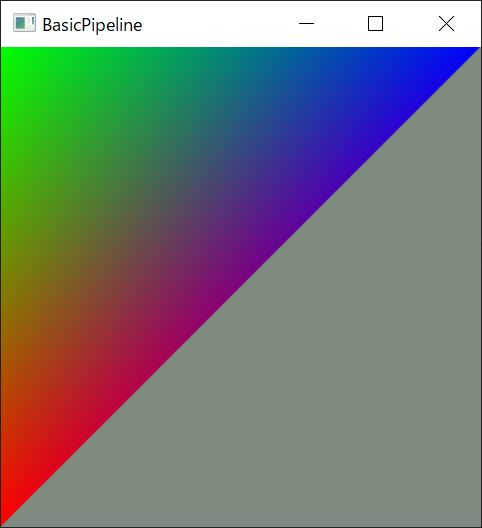

Basic Pipeline¶
Sahder を使う最小構成。
頂点バッファを省略することができるので2次元の GeometryShader から入る。
空の頂点バッファからダミーの Point Primitive を入力して、GeometryShader で 三角形を出力する。
頂点バッファを省略¶
../../lib/gorilla/pipeline.cpp¶
1 void Pipeline::draw_empty(const ComPtr<ID3D11DeviceContext> &context) {
2 context->IASetVertexBuffers(0, 0, nullptr, nullptr, nullptr);
3 context->IASetPrimitiveTopology(D3D11_PRIMITIVE_TOPOLOGY_POINTLIST);
4 context->Draw(1, 0);
5 }
何もしない頂点シェーダー。
point DummyInput input[1]: POSITION に対応して D3D11_PRIMITIVE_TOPOLOGY_POINTLIST を使う。
空の頂点シェーダーをキックすることで、間接的に GeometryShader を始動する。
GeometryShader¶
../../assets/basic.hlsl¶
1 void vsMain() {}
2
3 struct DummyInput {};
4 struct GS_OUTPUT {
5 float4 position : SV_POSITION;
6 float4 color : COLOR0;
7 };
8
9 [maxvertexcount(3)] void gsMain(point DummyInput input[1]
10 : POSITION,
11 inout TriangleStream<GS_OUTPUT> output) {
12 GS_OUTPUT element;
13
14 // 0
15 element.position = float4(-1, -1, 0, 1);
16 element.color = float4(1, 0, 0, 1);
17 output.Append(element);
18 // 1
19 element.position = float4(-1, 1, 0, 1);
20 element.color = float4(0, 1, 0, 1);
21 output.Append(element);
22 // 2
23 element.position = float4(1, 1, 0, 1);
24 element.color = float4(0, 0, 1, 1);
25 output.Append(element);
26 output.RestartStrip();
27 }
28
29 float4 psMain(GS_OUTPUT V)
30 : SV_Target {
31 return V.color;
32 }
ビューポート座標系¶
{kind=link}
第1頂点が (-1, -1) かつ赤。 第2頂点が (-1, +1) かつ緑。 第3頂点が (+1, +1) かつ青。
ということから
2(-1, +1) 3(+1, +1)
+---+
| |
+---+
1(-1, -1)
という座標系であることがわかる。 三角形は時計回り。 試しに、第２頂点の符号を逆にすると見えなくなる。
ID3D11RasterizerState のデフォルトが
D3D11_RASTERIZER_DESC::CullMode = D3D11_CULL_BACK;
D3D11_RASTERIZER_DESC::FrontCounterClockwise = false;
であることがわかる。